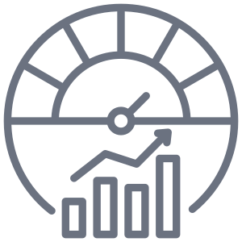

Akses Perkhidmatan Pergigian
Status akses perkhidmatan mengikut daerah.
info lanjutKesihatan Pergigian Sekolah
Pra sekolah, sekolah rendah dan menengah.
info lanjut Indikator Prestasi Utama (KPI)
Sasaran utama kesihatan pergigian.
info lanjutTenaga Kerja Pergigian
Latihan & purata hasil kerja.
info lanjutProgram Pencegahan Pergigian
MMI, klinikal pencegahan karies & outreach.
info lanjutRingkasan Pencapaian Kesihatan Pergigian
Akses Kesihatan Pergigian, Pencapaian Toddler, Ibu Mengandung & Warga Emas
Akses
Toddler TPR
Ibu Mengandung
Warga Emas ≥20 gigi
Bebas Karies Mengikut Umur
--%
--%
--%
6 Tahun
12 Tahun
16 Tahun